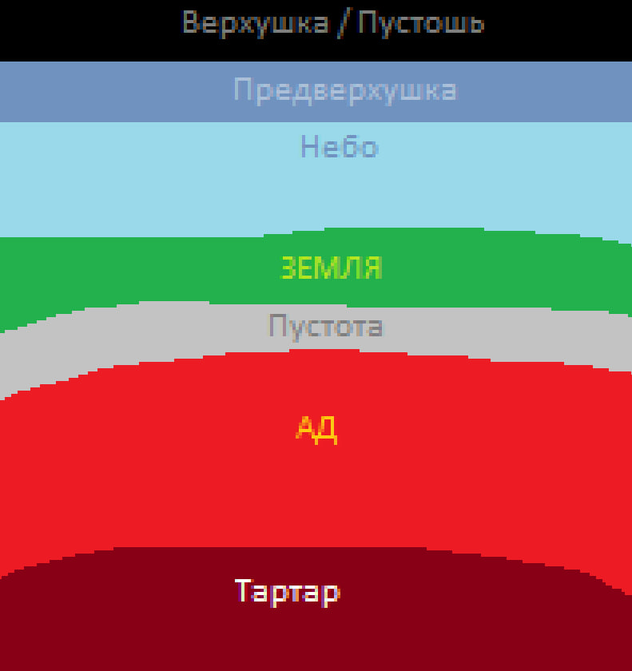
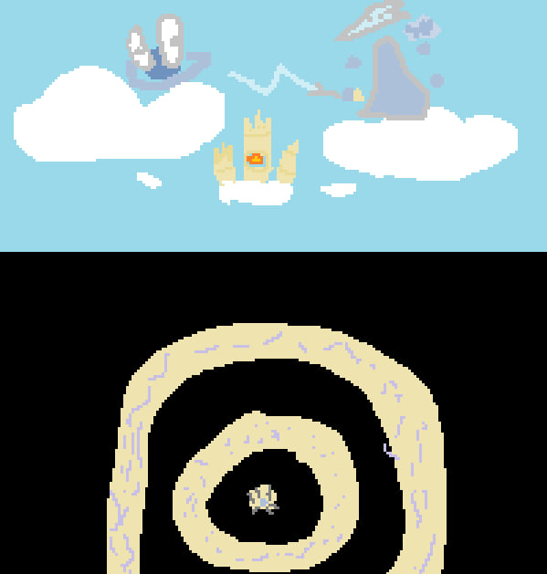
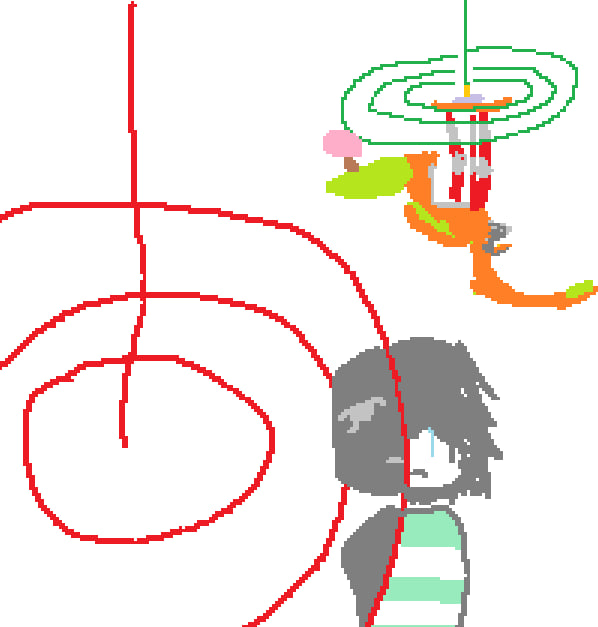

тут будут сумашедшие и обычные теории

На картинке показаны слои мира и я обьясню их.
Тартар - бездна где наказывают ангелов. Скорее всего там и пытались убить бима. Ад даже не стоит обьеснять.
Пустота - Пустота за бедроком на границе обычного мира и ада. Земля - Место где проживаем мы/игроки. Туда имеют доступ божества и ангелы
Небо - Граница между предверхушки чем выше тем холоднее. Предверхушка - холод настолько сильный что даже сухо так как вся влажность скапливается и становится снежинкаим.
Верхушка/Пустошь - является самой холодной точкой в мире майнкрафт. Там находится энд но только на границе с предверхушкой. Выше энда на конце пустоши находится мир богов/верхушек именно там зародились боги и ангелы.

Все легко и просто! Бим является ангелом те кто для свыше это боги. Бим имеет схожесть с библейскими ангелами что подтвержает теорию что тот ангел.
Грозы без причины тоже обьесняет то что боги недовольны что бим освободился ведь те пытались его убить.

На первых заданиях бима нужно было взаимодействовать с сигналами. Сигналы творения игроков и Бима.
С помощью лучей можно связатся с Верхушкой где находится Бим . Зеленый луч - главный луч, а вот красный луч - обычный луч.
Главный луч вызывает хорошие эффекты не затягивая к себе и не вызывая рвоту. Красные лучи могут притягивать к себе а так же вызывать тощноту